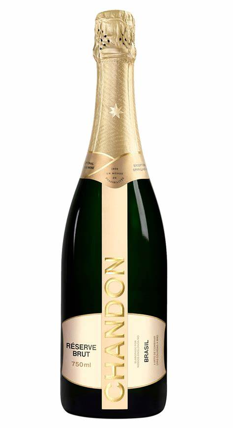
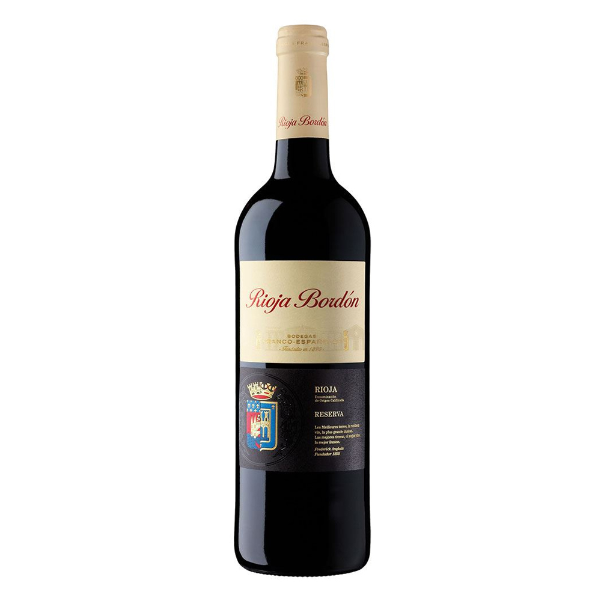

|
Piscine Stripes |
França |
Vinho rosé |
Em férias de verão em Saint-Tropez na Côte dAzur, Jacques Tranier conheceu o hábito dosbares locais em servir vinho rosé com gelo. Encantado com a ideia, desenvolveu um vinho ideal, com maior concentração de açúcar, afinal tinha que ser servido com gelo e sem perder a estrutura foi então que em 2004 o Rosé Piscine foi lançado na França. Uma bebida sofisticada e irreverente, já que possibilita ao consumidor degustar o vinho de forma diferenciada com duas a três pedras de gelo. |
 |
Brunello di Montalcino |
Itália |
Vinho tinto |
Brunello di Montalcino é um vinho tinto italiano DOCG produzido nos vinhedos que cercam a cidade de Montalcino, na província de Siena, localizada a cerca de 80 km ao sul de Florença, na região vinícola da Toscana. |
|  |
Chandon |
França |
Espumante |
O espumante Chandon tem uma história centenária. Apreciado e consumido pela aristocracia, por figuras públicas importantes, personalidades e celebridades, tornou-se símbolo de glamour e sofisticação. Hoje o espumante está presente em festas e eventos públicos e privados de grande expressão. A origem da empresa data de 1743. Nesse ano, Claude Moët passou a produzir e vender seus próprios vinhos na região de Épernay, na França. |
|  |
Rioja |
Espanha |
Vinho branco |
O Rioja é produzido a partir de uvas produzidas não apenas naquela comunidade autônoma mas também em partes de Navarra e de Álava. A região demarcada é subdividida em três: Rioja Alta, Rioja Baja e Rioja Alavesa. |